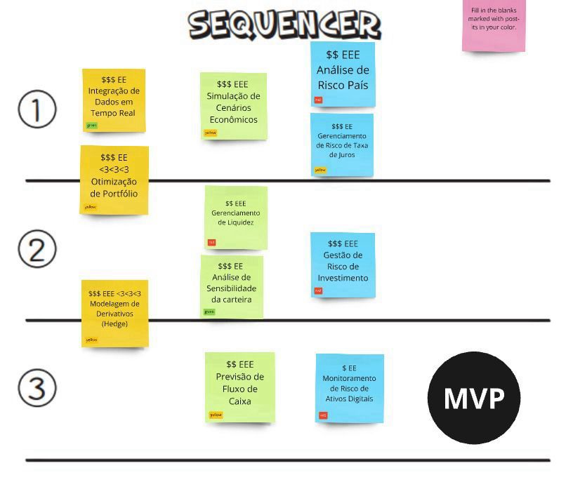

Priorização de Funcionalidades e MVP
Introdução
A priorização das funcionalidades para o desenvolvimento da aplicação de fundo de pensão foi realizada utilizando o modelo Lean, com o objetivo de maximizar o valor entregue ao usuário, minimizando desperdícios e garantindo um fluxo de trabalho eficiente. A priorização foi feita em uma reunião com todos os membros do grupo de desenvolvimento, onde discutimos as funcionalidades que mais impactariam os usuários e que estariam alinhadas com os objetivos do projeto. A partir dessa priorização, montamos o Mínimo Produto Viável (MVP), focando nas funcionalidades essenciais para a primeira entrega.
Metodologia de Priorização
A priorização das funcionalidades seguiu os seguintes passos:
- Reunião de Priorização: Todos os membros do grupo participaram de uma reunião para discutir as funcionalidades necessárias, os requisitos dos usuários e as metas do projeto.
- Análise de Valor e Esforço: Utilizamos o modelo Lean para avaliar cada funcionalidade, levando em consideração o valor que ela traria para os usuários e o esforço necessário para implementá-la. Funcionalidades de alto valor e baixo esforço foram priorizadas.
- Construção do MVP: Com base nas funcionalidades priorizadas, determinamos o MVP, que contém as funcionalidades essenciais para atender aos requisitos iniciais dos usuários e garantir o funcionamento do sistema com o menor esforço possível.
Funcionalidades Prioritárias para o MVP
A seguir, apresentamos as funcionalidades priorizadas para a primeira versão da aplicação (MVP):
| Funcionalidade | Justificativa | Valor | Esforço |
|---|---|---|---|
| Integração de Dados em Tempo Real | Permite que os usuários acompanhem as flutuações do mercado em tempo real. | Alto | Médio |
| Otimização de Portfólio | Maximiza o retorno e minimiza o risco dos investimentos, essencial para investidores preocupados com segurança. | Alto | Alto |
| Modelagem de Derivativos (Hedge) | Ajuda a proteger os investimentos contra riscos financeiros imprevistos e otimizar o retorno. | Alto | Alto |
| Simulação de Cenários Econômicos | Permite simular diferentes cenários econômicos para entender o impacto no portfólio. | Alto | Médio |
| Gerenciamento de Liquidez | Garante que o portfólio tenha a liquidez necessária para emergências ou novas oportunidades de investimento. | Médio | Médio |
| Análise de Sensibilidade da Carteira | Permite analisar como mudanças em variáveis econômicas afetam o desempenho do portfólio. | Alto | Médio |
| Previsão de Fluxo de Caixa | Ajuda os usuários a planejarem melhor seus investimentos para garantir uma aposentadoria confortável. | Alto | Médio |
| Análise de Risco do País | Avalia os riscos geopolíticos e econômicos ao investir em mercados internacionais. | Médio | Alto |
| Gerenciamento de Risco da Taxa de Juros | Permite entender o impacto das variações nas taxas de juros sobre os investimentos. | Médio | Médio |
| Gestão de Risco de Investimento | Avalia os riscos associados ao portfólio de investimentos para garantir uma distribuição equilibrada e segura. | Alto | Alto |
| Monitoramento de Risco de Ativos Digitais | Permite monitorar o risco dos ativos digitais, como criptomoedas, para proteger o portfólio contra volatilidades extremas. | Alto | Médio |

Conclusão
A priorização das funcionalidades seguiu os princípios do Lean, buscando equilibrar o valor das funcionalidades com o esforço necessário para desenvolvê-las. A partir da reunião com a equipe, definimos um MVP focado nas funcionalidades mais críticas para os usuários, garantindo que a aplicação atenda às suas necessidades básicas enquanto continuamos com o desenvolvimento de funcionalidades mais avançadas nas próximas etapas.
Bibliografia
- Poppendieck, M., & Poppendieck, T. (2003). Lean Software Development: An Agile Toolkit. Addison-Wesley Professional.
- Cohn, M. (2004). User Stories Applied: For Agile Software Development. Addison-Wesley Professional.
Tabela de versionamento
| Versão | Data | Descrição | Responsável |
|---|---|---|---|
| 1.0 | 10/11/2024 | Documentação da priorização e mvp | Marcos Deus |